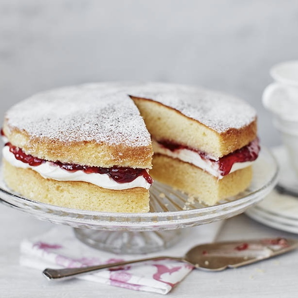

Vicoria Sponge Cake
RatingRate
Prep: 15mins | Cook: 30mins
Serves 8
Easy
A basic and simple cake, a British classic, named after Queen Victoria.
Ingredients
Method
- pre-heat the oven to gas 3, 170°C, fan 150°C. Grease and line 2 x 8 inch (20cm) springform cake tins with nonstick baking paper.
- In a large mixing bowl, cream together the butter, vanilla extract and sugar using an electric hand held whisk until light and fluffy. Add the lightly beaten egg a tablespoon at a time, beating well between additions, until fully incorporated. Carefully fold the flour in using a large metal spoon and spoon the batter evenly into the two prepared cake tins.
- Bake for 25-30 minutes until springy to the touch and a cake tester comes out clean when inserted into the centre of the cakes. Remove and allow the tins to cool on a wire rack for 5 minutes before turning out and peeling away the nonstick baking paper.
- Whip the cream to soft peaks as the cakes cool, then spread the bottom half of the cake with the cream in an even layer. Spread the strawberry jam evenly and carefully on top of the cream. Sandwich the cake with the other half of the cake and transfer it carefully to a serving plate. Dust with the icing sugar and serve.